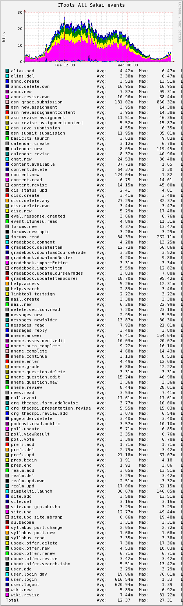
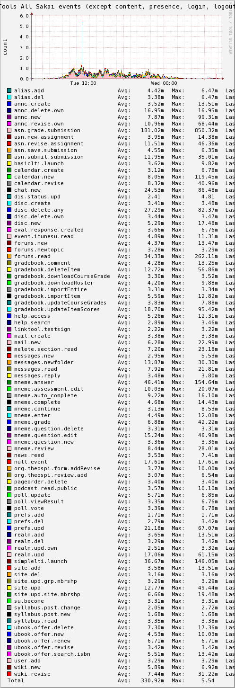
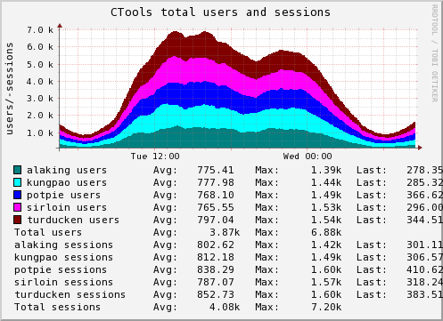

Unraveling the runtime behavior of Sakai
R.P. (Adi) Aditya
© 2010
A running Sakai installation produces a lot of system data. To manage
the flow we have to be able to see noteworthy events and trends "at a
glance".
|  |  |
We collect information from multiple sources:
We use RRDtool (rrdtool.org) to store the timeseries data in round-robin dbs (RRDs).

We use
drraw (web.taranis.org/drraw) "graphical" report generator
Both RRDtool and drraw are open-source tools, simple to use, modify and extend.
We "mine" HTTP access logs -- from the load-balancer and rotated
every minute
Filter ctools HOST ctools.umich.edu IP 141.211.48.10
begin ctools
logInterval 1
logFilenameFormat /admin/netscaler/log/%v/%{%Y%m%d%H%M}t.log
logTime GMT
logFormat custom %{%Y-%m-%d %H:%M:%S}t|%a|%A|%p|%l|%u|%v|%s|%m|%H|%r|%j|%J|%M|
end ctools
The logfiles look like this -- 1 per minute:
[netscaler@feet bin]$ ls -la ../log/ctools.umich.edu/
201006141723.log 201006141725.log 201006141727.log 201006141729.log archive
201006141724.log 201006141726.log 201006141728.log 201006141730.log
[netscaler@feet bin]$ ls -la ../log/ctools.umich.edu/201006141723.log
-rw-rw-r-- 1 netscaler netscaler 760556 Jun 14 13:24 ../log/ctools.umich.edu/201006141723.log
[netscaler@feet bin]$ less !$
less ../log/ctools.umich.edu/201006141723.log
2010-06-14 17:23:00|67.194.202.128|141.211.253.110|443|-|-|ctools.umich.edu|200|GET|HTTP/1.1|GET /courier/13e0b125-b595-4acc-aeb8-01c8bd2
d83d5-presence?auto=true&unq=1276536179744-0.3895151484757662 HTTP/1.1|1108|485|14799|
2010-06-14 17:23:00|141.211.130.18|141.211.253.110|443|-|-|ctools.umich.edu|200|GET|HTTP/1.1|GET /courier/c80c6c6d-f79e-4948-804f-29496f7
31cae-presence?auto=true&unq=1276536180032-0.5589097623562631 HTTP/1.1|1216|485|1226|
2010-06-14 17:23:00|69.245.83.99|141.211.253.132|443|-|-|ctools.umich.edu|200|GET|HTTP/1.1|GET /portal/tool/576efdbd-3103-421b-99f5-ee909
8661bbf/sakai.messageforums.helper.helper/discussionForum/message/dfAllMessages HTTP/1.1|1371|12022|191600|
2010-06-14 17:23:00|141.212.45.83|141.211.253.132|443|-|-|ctools.umich.edu|200|GET|HTTP/1.1|GET /courier/298c4ed0-37ff-4f0f-9b96-8a0d50f1
42eb-presence?auto=true&unq=1276536180079-0.9985375095032407 HTTP/1.1|1131|446|12160|
2010-06-14 17:23:00|67.184.97.184|141.211.253.110|443|-|-|ctools.umich.edu|302|GET|HTTP/1.1|GET /portal/tool/9e73678c-592c-4820-8185-dee5
7074aa17?messageId=76f51573-3cbe-4913-9b8e-d33890b952c9&panel=List&sakai_action=doExpand_message HTTP/1.1|1266|363|331611|
Since Sakai URLs are "opaque" and obfuscated by the GUID, we do a running translation of URLs to figure out tool and site-id.
Per site-id data collection is currently turned off since it is hard to consolidate the sparse logging efficiently (disk IO is very expensive).
We do regexp matching on the request URL:
if ($request =~ /\/(portal|access)\/(site|presence)\/([\w+\-]+)(\s|\/|\?).*/ ...)
then get the site type from the db (and cache it):
select type from sakai_site where site_id = ?
If the URL "looks like" a Sakai tool:
if ($request =~ /\/portal\/tool\/([\w+\-]+)(\/|\?).*/
select t.registration, t.site_id, s.type from SAKAI_SITE_TOOL t left outer join sakai_site s on t.site_id = s.site_
id where t.tool_id = ?
|  |  |
- Data for first graph comes directly from the Sakai tables
- hard to check outside of Sakai since notions of users and sessions is Sakai specific (doesn't conform to Servlet API), so best check is TCP connections
Here is a query to get the number of users and sessions at the moment from the Sakai tables:
select 'users', regexp_replace(session_server, '\\-.*', ''), 'placeholder', count(distinct(session_user)) as num_use rs, count(session_id) as num_sessions from sakai_session where session_start >= SYSDATE - 1 and session_start = session_end group by regexp_replace(session_server, '\\-.*', '')
Longer term trends (1 year in this case) are also interesting to see
and here is an example from data collected directly from Sakai tables:
 |
 |
Here is how we get an event count from the Sakai tables:
select 'event', case when event is null then 'null.event' else event end as event, 'placeholder', count(*) as count, 0 from sakai_event where event_date > (sys_extract_utc(localtimestamp) - interval '0:05' hour to minute) and event_date < sys_extract_utc(localtimestamp) group by event
A brief tour through different types of system stats:
System map
dbpool.jsp
<%@ page import="org.sakaiproject.component.cover.ComponentManager" %><%
%><%@ page import="org.apache.commons.dbcp.BasicDataSource" %><%
BasicDataSource ds = (BasicDataSource)ComponentManager.get("javax.sql.DataSource");
%>
Active|<%=ds.getNumActive()%>|Idle|<%=ds.getNumIdle()%>|
SNMP configured in JVM
JAVA_OPTS="$JAVA_OPTS -Dcom.sun.management.snmp.interface=0.0.0.0 -Dcom.sun.management.snmp.port=10163"
JAVA_OPTS="$JAVA_OPTS -Dcom.sun.management.snmp.acl.file=/usr/local/sakai/conf/snmp.acl"
view all included .1 80
proxy -m /usr/share/snmp/mibs/JVM-MANAGEMENT-MIB.txt -v 2c -c public localhost:10163 .1.3.6.1.4.1.42.2.145
Some of the other custom monitoring applications we run
- Nagios + event handler
- JVM SNMP
- log4j Syslog Appender + swatch
we restart the application if it has gotten to a state where it isn't responding over several minutes:
define service{
host_name alaking,potpie,kungpao,sirloin,turducken
service_description https_db_afs
check_command check_ctools_db_afs!-ctools
max_check_attempts 14
normal_check_interval 1
retry_check_interval 1
event_handler restart-ctools
check_period ctools
notification_interval 15
notification_period ctools
notification_options w,c,r
contact_groups ctools-admin-restart
}
The check is rudimentary but "deep" as it tests the response time of
the db plus the storage layer in addition to Tomcat and Sakai:
[nagios@bifrost nagios]$ less ~/libexec/check_ctools_db_afs
#!/usr/local/bin/perl -w
use strict;
local $| = 1;
my($SERVER) = $ARGV[0];
my($CLUSTER) = $ARGV[1] || "";
my($timeout) = 15;
my($RV) = `/usr/bin/wget -q -t ${timeout} -O - https://${SERVER}/access/content/public/ok.txt | grep -c "ok${CLUSTER}"`;
if ($RV == 1){
print STDOUT "CTools appserver [${SERVER}] can get to the db and AFS okay";
exit 0;
} else {
print STDOUT "CTools appserver [${SERVER}] could NOT get to the db and AFS within ${timeout} secs (got ${RV})";
exit 2;
}
and on enough failures, restart the application on the particular appserver using an event handler:
[nagios]$ $ less ~/libexec/event_handlers/restart_ctools_all.sh
....
CRITICAL)
...
SOFT)
...
[1-4])
# Wait until the check has been tried 4 times before restarting the web server.
echo "${CTOOLSTYPE} service on ${HOST} is having trouble (soft critical state #${3})..."
/usr/bin/ssh root@${HOST} "/bin/date;/usr/bin/curl --max-time 30 --write-out \"%{http_code} %{time_total}\n\n\" --insecure \"https://ctoolsmon/stats/ctools/activeQueries.jsp?pwd=XXXX&m=${HOST}&h=${DBHOST}&n=${DBNAME}\";/usr/local/jdk/bin/jstack \`pgrep -u tomcat5 java\`; /usr/local/sbin/jvmCrashReporter.pl /var/log/sakai/catalina.out;/usr/sbin/lsof -i | awk '{ print \$1 }' | sort |uniq -c; /usr/sbin/lsof -u tomcat5;/bin/date;" 2>&1 | /bin/mail -s "${HOST} ${CTOOLSTYPE} server not responding (check #${3} failed)" ${MAILDEST}
;;
5)
/usr/bin/ssh root@${HOST} "/bin/date;/usr/bin/curl --max-time 30 --write-out \"%{http_code} %{time_total}\n\n\" --insecure \"https://ctoolsmon/stats/ctools/activeQueries.jsp?pwd=XXXX&m=${HOST}&h=${DBHOST}&n=${DBNAME}\";/usr/local/jdk/bin/jstack \`pgrep -u tomcat5 java\`; /usr/local/sbin/jvmCrashReporter.pl /var/log/sakai/catalina.out;/usr/sbin/lsof | /usr/bin/wc -l; /usr/sbin/lsof -u tomcat5;/bin/date;${RESTARTCOMMANDS};" 2>&1 | /bin/mail -s "${HOST} ${CTOOLSTYPE} server ${RESTARTNAME} output" ${RESTARTMAILDEST}
echo "`/bin/date -u +%s` ${HOST}_restart" >> /admin/evt/${CTOOLSTYPEUPPER}_restart.evt 2>&1
/usr/bin/logger -p crit "case statement ${3} reached, sending mail to ${RESTARTMAILDEST} -- end"
#
# no longer do the heap dump since it doesn't always succeed and the restart takes too long if it does
# /usr/bin/ssh root@${HOST} "/bin/date;/usr/sbin/lsof | /usr/bin/wc -l; /usr/sbin/lsof -u tomcat5;cd /var/log/sakai;/usr/local/jdk/bin/jmap -heap:format=b \`pgrep -u tomcat5 java\`;/usr/local/sbin/ctools-shutdown;/bin/date;;/usr/local/sbin/ctools-startup;/bin/date;" | /bin/mail -s "${HOST} CTools restart output" ${MAILDEST}
echo "${CTOOLSTYPE} service on ${HOST} needs restart (soft critical state #${3})..."
echo "${RESTARTSTRING} CTools service on ${HOST}"
echo "${RESTARTNAME} command sent to ${HOST}, should be up in $EXPECTEDRESTARTSECS seconds"
;;
the restart output is sent in email to a ticket queue as well as
operations/admin groups and contains things like this (output of
activeQueries.jsp and jstack output):
SID|USERNAME|BLOCKING_SESSION|STATUS|SQL_ID|SQL_TEXT|
697|CTOOLS_USER||INACTIVE|458vbf9drnyxg||
....
763|CTOOLS_USER||INACTIVE|458vbf9drnyxg||
934|CTOOLS_USER||INACTIVE|d8hgvrcs9x1yw|select TOOL_ID, PAGE_ID, REGISTRATION, TITLE, LAYOUT_HINTS, PAGE_ORDER from SAKAI_SITE_TOOL where SITE_ID = :1 order by PAGE_ID, PAGE_ORDER ASC|
982|CTOOLS_USER||INACTIVE|d8hgvrcs9x1yw|select TOOL_ID, PAGE_ID, REGISTRATION, TITLE, LAYOUT_HINTS, PAGE_ORDER from SAKAI_SITE_TOOL whereSITE_ID = :1 order by PAGE_ID, PAGE_ORDER ASC|
...
1058|CTOOLS_USER||INACTIVE|458vbf9drnyxg||
SID|USERNAME|BLOCKING_SESSION|EVENT|STATE|SECONDS_IN_WAIT|WAIT_CLASS|
1042|CTOOLS_USER||SQL*Net message from client|WAITING|249|Idle|
...
786|CTOOLS_USER||SQL*Net message from client|WAITING|251|Idle|
1058|CTOOLS_USER||SQL*Net message from client|WAITING|251|Idle|
...
Attaching to process ID 16771, please wait...
Debugger attached successfully.
Server compiler detected.
JVM version is 1.5.0_13-b05
Thread 24340: (state = BLOCKED)
Error occurred during stack walking:
sun.jvm.hotspot.debugger.DebuggerException: sun.jvm.hotspot.debugger.DebuggerException: get_thread_regs failed for a lwp
at sun.jvm.hotspot.debugger.linux.LinuxDebuggerLocal$LinuxDebuggerLocalWorkerThread.execute(LinuxDebuggerLocal.java:134)
at sun.jvm.hotspot.debugger.linux.LinuxDebuggerLocal.getThreadIntegerRegisterSet(LinuxDebuggerLocal.java:437)
at sun.jvm.hotspot.debugger.linux.LinuxThread.getContext(LinuxThread.java:48)
at sun.jvm.hotspot.runtime.linux_amd64.LinuxAMD64JavaThreadPDAccess.getCurrentFrameGuess(LinuxAMD64JavaThreadPDAccess.java:75)
activeQueries.jsp is simple:
String q;
String machine = request.getParameter("m");
if (machine != null && !machine.equals("")){
String queries[] = {
"select s.sid, s.username, s.blocking_session,
case when s.blocking_session is not null then (select s2.sql_id || '.'
|| s2.machine || ' ' || case when a2.sql_text is not null then
a2.sql_text else 'NA' end from v$session s2 left outer join v$sqlarea
a2 on s2.sql_id = a2.sql_id where s2.sid = s.blocking_session) end as
blockingsql, s.status, s.sql_id, a.sql_text from v$session s left
outer join v$sqlarea a on s.sql_id = a.sql_id where s.machine = ?
order by s.sid",
"SELECT sw.sid, s.username,
s.blocking_session, sw.event, sw.state, sw.seconds_in_wait,
sw.wait_class FROM v$session_wait sw, v$session s WHERE sw.sid=s.sid
and s.machine= ? order by sw.SECONDS_IN_WAIT, sw.sid, sw.state"
};
We force the JVM on each appserver to do a thread dump every 10 minutes as jstack wasn't as complete when called on demand:
# thread dumps every 10 minutes on ctools-prod as per botimer
3,13,23,33,43,53 * * * * radmind /admin/radmind/bin/forcmd -p -k ctops/ctools-prod.K "pkill -QUIT -u tomcat5 java" > /dev/null
the output is in
catalina.out and so is familiar but hard
to parse automatically or report on without running a script on each
appserver -- would be better if we could do it on a central host.
"VM Periodic Task Thread" prio=1 tid=0x00002aac54120c20 nid=0x3be5 waiting on condition
443544.309: [GC 443544.309: [ParNew: 2044032K->0K(2046016K), 0.1379440 secs] 3633139K->1661077K(6142016K), 0.1381190 secs]
443842.219: [GC 443842.219: [ParNew: 2044008K->0K(2046016K), 0.1076400 secs] 3705085K->1715510K(6142016K), 0.1078500 secs]
Full thread dump Java HotSpot(TM) 64-Bit Server VM (1.5.0_21-b01 mixed mode):
"TP-Processor49" daemon prio=1 tid=0x00002aac69934ca0 nid=0x59c runnable [0x000000004c25b000..0x000000004c25bb90]
at java.net.SocketInputStream.socketRead0(Native Method)
at java.net.SocketInputStream.read(SocketInputStream.java:129)
at java.io.BufferedInputStream.fill(BufferedInputStream.java:218)
at java.io.BufferedInputStream.read1(BufferedInputStream.java:256)
at java.io.BufferedInputStream.read(BufferedInputStream.java:313)
- locked <0x00002aab86283f48> (a java.io.BufferedInputStream)
...
We send all messages logged via log4j in Tomcat to a central loghost:
[root@appserver ~]# grep -i ctools /usr/local/tomcat5/common/classes/log4j.properties
log4j.rootLogger=INFO, R, CTOOLS
log4j.appender.CTOOLS=org.apache.log4j.net.SyslogAppender
log4j.appender.CTOOLS.syslogHost=10.211.199.139
log4j.appender.CTOOLS.layout=org.apache.log4j.PatternLayout
log4j.appender.CTOOLS.layout.ConversionPattern=[%t] %-5p %c - %m%n
log4j.appender.CTOOLS.Facility=LOCAL5
[root@loghost root]# grep local5 /etc/syslog.conf
kern.*;*.info;mail.none;authpriv.none;cron.none;local5.none;local4.none;local6.none;local8.none /var/log/messages
local5.* /var/log/ctools.log
syslog output can be easily filtered and watched by developers and others using
simple command line tools like
swatch:
*** swatch version 3.1.1 (pid:7312) started at Thu Jun 10 08:19:56 EDT 2010
Jun 10 07:27:38 10.211.253.134 [TP-Processor32] ERROR org.etudes.tool.melete.SectionPage - Could not create log file java.io.FileNotFoundException: /var/uploads/uploads_missing_log.txt (No such file or directory)
Jun 10 07:43:58 10.211.253.110 [TP-Processor21] ERROR org.apache.catalina.core.ContainerBase.[Catalina].[localhost].[/sakai-site-manage-tool].[sakai.siteinfo] - Servlet.service() for servlet sakai.siteinfo threw exception
#
# Personal Swatch configuration file
#
ignore = /ERROR org.hibernate.event.def.AbstractFlushingEventListener - Could not synchronize database state with session/
ignore = /ERROR org.sakaiproject.tool.gradebook.ui.SpreadsheetUploadBean - User \w+ is unknown to this gradebook: java.lang.NullPointerException/
ignore = /ERROR org.radeox.filter.XHTMLFilter - Failed to XHTML check /
ignore = /ERROR vm.warn/
ignore = /ERROR org.sakaiproject.tool.gradebook.ui.SpreadsheetUploadBean - org.sakaiproject.service.gradebook.shared.ConflictingAssignmentNameException: You can not save multiple assignments in a gradebook with the same name/
ignore = /ERROR org.hibernate.util.JDBCExceptionReporter - ORA-00001: unique constraint/
ignore = /ERROR org.sakaiproject.component.gradebook.GradebookServiceHibernateImpl - AUTHORIZATION FAILURE:/
watchfor = / ERROR /
echo=blue
watchfor = / FATAL /
throttle 60:0
echo=red
ignore = / WARN /
ignore = / INFO /
We need the realtime data, plus the trends to be widely available to
everyone supporting the application. In fact, it is useful to compare
different Sakai instances, so we make it globally, publically
available at: